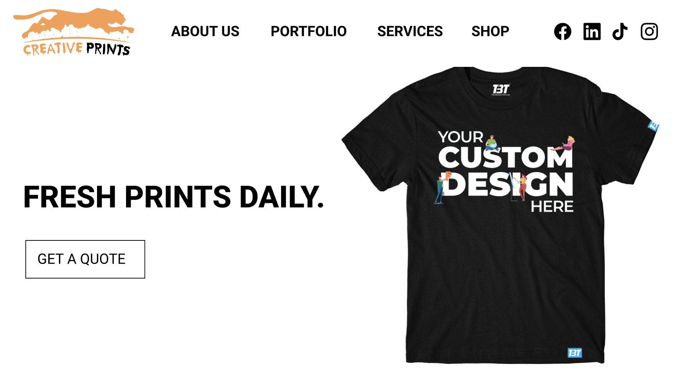
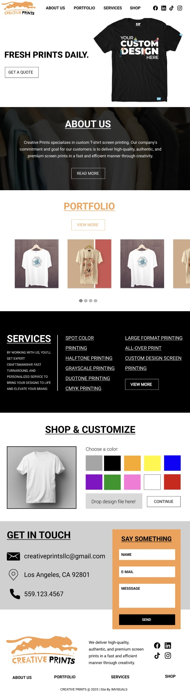
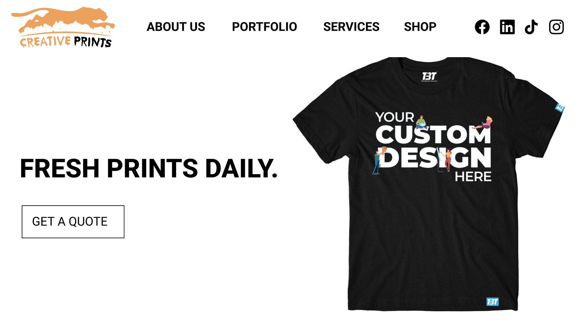
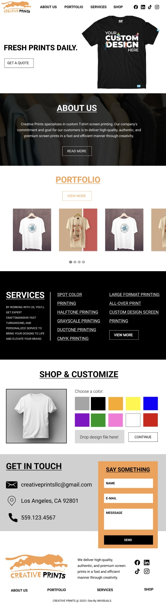

Creative Prints
Introducing Creative Prints, excelling in delivering premium, high-quality custom
T-shirt screen printing with a focus on creativity and efficiency. I provide comprehensive
branding services, including logo variations tailored to your vision, detailed brand guidelines
to articulate your brands identity, and web design that showcases a cohesive and engaging online
presence. Together, we bring your brand to life with authenticity and precision.
Tools used: Adobe
Illustrator + Adobe Photoshop + Adobe XD


 


